The Network Layer¶
总览¶
一段话总结¶
网络层是负责端到端传输的底层，其设计问题包括为传输层提供的服务、内部组织等，有数据报和虚电路两种服务类型。路由算法决定数据包传输路径，分为非自适应和自适应算法，如最短路径路由、洪泛、距离矢量路由、链路状态路由和分层路由等。同时，网络层还涉及拥塞控制算法、服务质量保障、网络互联以及互联网中的网络层（如IPv4、IPv6、ICMP、ARP、DHCP、OSPF、BGP等），这些技术共同保障网络高效、稳定运行。
 ¶
¶
详细总结¶
- 网络层设计问题
- 服务类型：为传输层提供两类服务，连接导向服务（虚电路） 和 无连接服务（数据报）。虚电路在通信前需建立路径，数据沿既定路径传输；数据报则每个数据包独立路由。
- 内部组织：采用存储转发分组交换 方式，路由器负责存储和转发数据包。
- 路由算法
- 分类：分为非自适应算法（静态路由） 和 自适应算法。非自适应算法路由决策不依赖当前流量和拓扑，预先计算并下载路由；自适应算法根据拓扑和流量变化调整路由决策。
- 具体算法
- 最短路径路由：构建子网加权有向图，用Dijkstra算法 计算最短路径。
- 洪泛：将数据包转发到除入链路外的所有链路，通过设置跳数计数器、序列号等技术抑制洪泛。
- 距离矢量路由：每个路由器维护路由表，通过与邻居交换信息更新，如RIP协议每30秒周期性更新。存在计数到无穷问题。
- 链路状态路由：路由器需发现邻居、测量链路延迟、构建和分发链路状态分组（LSP），并计算最短路径。
- 分层路由：将网络划分为区域和簇，减少路由表项数量。
- 拥塞控制算法
- 预防措施：包括网络配置、流量感知路由、准入控制、流量抑制 等。流量感知路由根据链路负载设置权重；准入控制在网络能承载时建立新虚电路。
- 反应措施：如负载丢弃，当路由器拥塞时丢弃数据包，RED（随机早期检测）在队列长度超阈值时采取行动。
- 服务质量
- 参数：涉及可靠性、延迟、抖动、带宽 四个主要参数。
- 流量整形与监管：采用漏桶算法 和 令牌桶算法，令牌桶算法可调节数据传输速率和突发度。
- 互联网中的网络层
- IPv4：报头包含版本、IHL等多个字段，如版本字段占4位，IHL字段表示报头长度，总长度字段最大为65535字节。
- IPv6：扩大地址空间至128位，简化协议，固定报头长度，去除IHL和协议字段，引入流标签等。
- ICMP：封装在IP数据包中，用于控制和差错报告，如目的不可达、时间超时等。
- ARP：实现IP地址到数据链路层地址的动态映射，通过广播请求获取对应地址。
- DHCP：用于IP地址自动分配，通过四次握手完成地址分配过程。
- OSPF：内部网关协议，支持多种距离度量，动态适应拓扑变化，划分区域减少流量。
- BGP：外部网关协议，根据路由策略选择最佳路由，考虑政治、安全等因素。
关键问题¶
- 数据报网络和虚电路网络在路由决策上有何不同？
- 数据报网络中，每个数据包独立进行路由决策，每次决策都需根据当前网络状况选择最佳路径；而虚电路网络仅在建立虚电路时进行路由决策，后续数据沿已建立的路径传输。
- 距离矢量路由算法中的计数到无穷问题是如何产生的，如何解决？
- 当网络中链路状态发生变化，如链路断开，距离矢量路由算法可能因信息更新不及时，导致路由器不断更新路由表中到故障网络的距离，使其不断增大直至无穷。可通过设置最大跳数（如RIP协议中设置为16）、水平分割（路由器从某个接口接收到路由信息后，不再从该接口将此路由信息发送回邻居路由器）等方法缓解。
- IPv6相比IPv4有哪些优势？
- 地址空间：IPv6地址空间为128位，相比IPv4的32位，极大地增加了地址数量，可满足未来网络设备增长需求。
- 协议简化：IPv6简化了报头，去除部分字段，使路由器处理数据包速度更快。
- 服务质量支持：IPv6更注重服务类型，能更好地满足实时数据传输需求。
- 安全性增强：增加了认证和加密扩展头，提升网络安全性。
Network Layer Design Issues¶
Issues¶
该内容主要介绍了网络层设计问题，涵盖向传输层提供的服务以及网络层内部组织，具体如下：
- 网络层设计问题分类：网络层设计问题主要包含两个方面，分别是向传输层提供的服务以及网络层的内部组织，其中网络层内部采用存储转发分组交换方式。
- 向传输层提供的服务：
- 设计目标：传输层应与路由器的数量、类型和拓扑结构相隔离，使其不受这些因素影响；同时，提供给传输层的网络地址要采用统一的编号方案，保证在局域网（LANs）和广域网（WANs）中都能通用。
- 服务类型：主要有两类。面向连接服务（虚电路） ，在数据传输前需建立一条逻辑连接，数据沿着该连接进行有序传输；无连接服务（数据报） ，每个数据报独立传输，它们之间没有固定的顺序和连接关系 。
Datagram¶
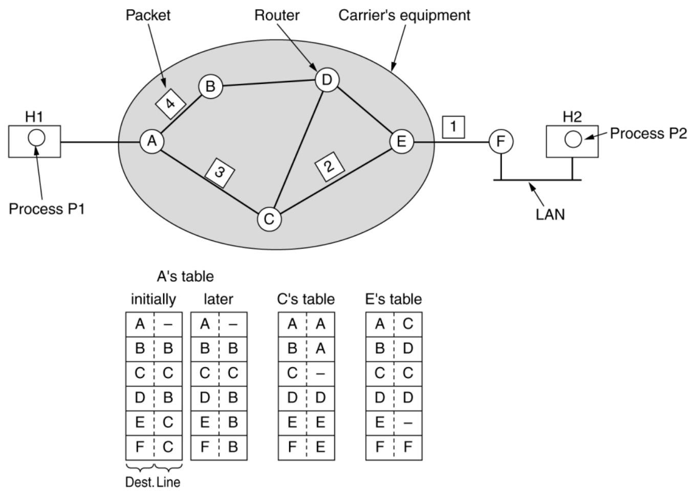
Virtual Circuit¶
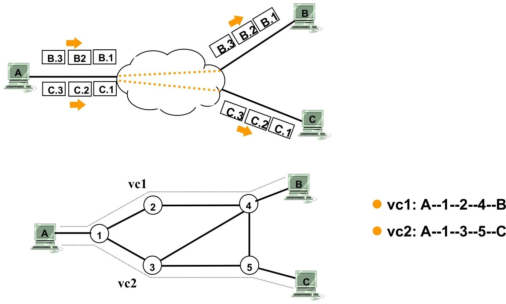 这两张图对比展示了数据报子网和虚电路子网的工作原理：
- 上方图（数据报子网示例）：
- 主机A向主机B和主机C发送分组。从A发出的分组（标记为B.1、B.2、B.3 以及C.1、C.2、C.3 ） 各自独立传输。
- 这些分组在网络（用云状图表示）中分别寻找路径，没有固定的传输路径依赖 ，每个分组都单独进行路由决策，体现了数据报子网中分组独立路由的特点 。
- 下方图（虚电路子网示例） ：
- 定义了两条虚电路vc1和vc2 。vc1的路径是A - 1 - 2 - 4 - B ，vc2的路径是A - 1 - 3 - 5 - C 。
- 一旦虚电路建立，主机A向主机B、C发送的数据就会沿着预先确定好的虚电路路径传输 。比如发往B的数据会固定沿着vc1路径走，发往C的数据会固定沿着vc2路径走 ，体现了虚电路子网在建立连接后按固定路径传输数据的特性。
| 比较项目 | 数据报子网（Datagram subnet） | 虚电路子网（Virtual - circuit subnet） |
|---|---|---|
| 电路建立（Circuit setup） | 不需要（Not needed） | 需要（Required） |
| 编址（Addressing） | 每个分组包含完整的源地址和目的地址（Each packet contains the full source and destination address） | 每个分组包含一个短的虚电路号（Each packet contains a short VC number） |
| 状态信息（State information） | 路由器不持有关于连接的状态信息（Routers do not hold state information about connections） | 每条虚电路在路由器中需要占用连接表空间（Each VC requires router table space per connection） |
| 路由（Routing） | 每个分组独立路由（Each packet is routed independently） | 虚电路建立时选择路由，所有分组都沿着该路由传输（Route chosen when VC is set up; all packets follow it） |
| 路由器故障的影响（Effect of router failures） | 除了在故障期间丢失的分组外，无其他影响（None, except for packets lost during the crash） | 所有经过故障路由器的虚电路都将终止（All VCs that passed through the failed router are terminated） |
| 服务质量（Quality of service） | 难以保障（Difficult） | 如果能为每条虚电路预先分配足够资源则较容易保障（Easy if enough resources can be allocated in advance for each VC） |
| 拥塞控制（Congestion control） | 难以实现（Difficult） | 如果能为每条虚电路预先分配足够资源则较容易实现（Easy if enough resources can be allocated in advance for each VC） |
Routing Algorithms¶
该部分内容围绕路由算法展开，主要涵盖以下方面：
-
路由算法的职责
- 数据包转发路径决策：负责决定输入数据包应从哪个输出线路传输。
- 虚电路子网：仅在建立新虚电路时进行路由决策，后续数据包沿已建立的路径传输，即会话路由。
- 数据报子网：因最佳路由可能变化，对每个到达的数据包都要重新进行路由决策。
- 区分转发与路由：虽未详细阐述二者差异，但强调了路由算法在其中的作用。
- 数据包转发路径决策：负责决定输入数据包应从哪个输出线路传输。
-
路由算法的目标
- 正确性：确保路由决策准确，使数据包能正确传输到目的地。
- 简单性：算法应简洁，便于实现、维护和理解。
- 鲁棒性：能在网络出现故障、拥塞等异常情况下正常工作。
- 稳定性：网络拓扑结构变化后能迅速收敛，重新计算并确定合适路由。
- 公平性：公平分配网络资源，避免某些节点或链路过度占用资源。
- 效率性：
- 最小化数据包平均延迟：减少数据包在网络中传输的时间。
- 最大化网络总吞吐量：提高网络单位时间内传输的数据量。
-
路由算法的分类
- 非自适应算法（静态路由）：路由决策不依据当前流量和拓扑的测量或估计，路由路径在网络启动前提前离线计算好并下载到路由器。
- 自适应算法：能根据拓扑结构和流量变化调整路由决策，以适应网络动态变化。
-
最优性原理
- 若路由器J在路由器I到路由器K的最优路径上，那么从J到K的最优路径也在同一路由上。若存在比r2更好的从J到K的路径rx ，将其与r1连接会得到比r1 + r2更优的从I到K的路径，这与r1 + r2是最优路径矛盾。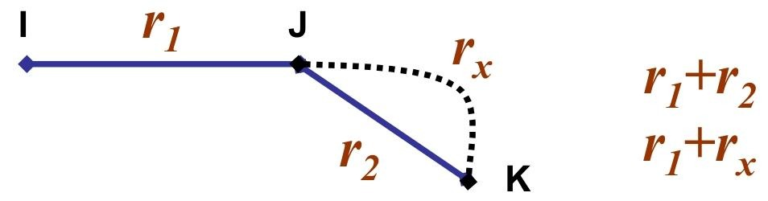
-
汇聚树
- 概念：从所有源节点到目的节点的最优路由构成以目的节点为根的树，无环路，保证数据包在有限跳数内送达。
- 算法目标：发现并利用所有路由器的汇聚树，但不同路由器对当前拓扑结构的认知可能存在差异。
Shortest Path Routing¶
该部分内容主要介绍了最短路径路由，具体如下：
构建子网图¶
- 图的构成：构建一个子网的加权有向图 。其中节点（Nodes）代表路由器 ，弧（Arcs）代表通信线路 。
- 权重（Weight）设定 ：
- 考量因素多样：权重可以是跳数（Hops） ；也可以是地理距离（单位为千米） ；还可以是平均排队和传输延迟。延迟通过每小时测试，使用标准测试分组确定。此外，权重是距离、带宽、平均流量、通信成本、平均队列长度、测量延迟等因素的函数 。
采用的算法¶
- Dijkstra算法 ：用于寻找给定的一对路由器之间的最短路径 。 借助该算法，依据构建的加权有向图及设定的权重，可计算出路由器间的最短路径，从而为网络数据包的路由选择提供依据 。
Flooding¶
该部分内容围绕洪泛（Flooding）展开，具体如下：
洪泛基本原理¶
- 特点：无需网络信息 。将接收到的数据包（除从入站链路接收的）转发到其他所有链路。最终会有若干副本到达目的地。
抑制洪泛的技术¶
- 存在问题：会产生大量重复数据包，若不采取措施抑制，数据包数量将趋于无穷。
- 解决措施：
- 跳数计数器：每个数据包头部含跳数计数器 ，每经过一跳计数器减1 ，减为0时丢弃数据包。发送方初始化跳数计数器为源到目的地路径长度或子网直径。
- 序列号：源在每个数据包中放入序列号 ，每个路由器记录每个源的最大序列号，用于识别已接收过的数据包。
- 选择性洪泛：路由器在数据库记录接收到的数据项，每个数据项有版本号，仅对新数据项进行洪泛。
洪泛的属性¶
- 路由尝试全面：尝试所有可能的路由，健壮性强 。
- 最短路径可达：至少有一个数据包会采用最小跳数路由。
- 节点遍历完全：所有节点都会被访问，在分发路由信息方面很有用。
Distance Vector Routing¶
该部分内容主要介绍距离矢量路由（Distance Vector Routing），具体如下：
基本原理¶
- 基于传闻路由：也叫Routed by rumor 。
- 路由表维护：每个路由器维护一张表，包含目的（Destination）、距离（Cost）、接口（Interface）、下一跳（Next Hop） 信息。距离可以是跳数、时延（毫秒）等。
- 信息交换更新：
- 发送路由信息：向邻居发送（目的地，距离）信息。方式有周期性更新（如RIP协议每30秒更新一次 ）和触发更新（表变化时更新） 。
- 接收路由信息：收到更好路由时更新本地表（增加和修改表项 ），刷新现有路由。若表项超时（如RIP 180秒 ）则删除。
示例说明¶
通过多个示例展示路由表更新过程： Example 1：展示从A、I、H、K输入信息后，J的新路由表。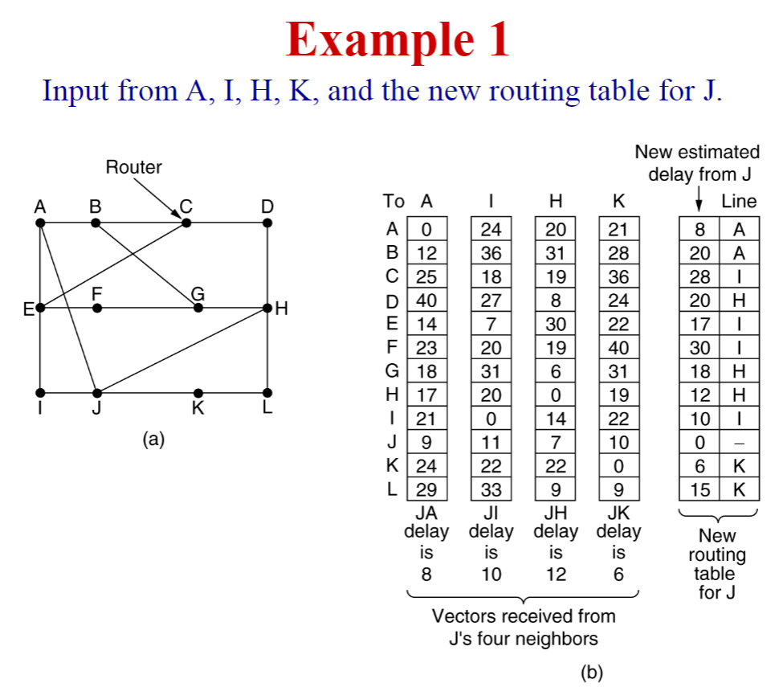
案例背景¶
本案例围绕距离矢量路由算法展开，目的是根据来自邻居路由器A、I、H、K的信息，构建路由器J的新路由表 。距离矢量路由算法中，路由器通过与相邻路由器交换距离矢量信息（包含到各目的网络的距离等）来更新自己的路由表。
图示内容¶
- 图 (a)：是网络拓扑图，展示了路由器J及其邻居路由器A、I、H、K ，以及其他相关路由器（B、C、D等）的连接关系，各节点通过链路相连，代表物理连接。
- 图 (b)
- 左侧表格：是从J的四个邻居A、I、H、K接收到的延迟矢量信息。行表示目的路由器（A - L） ，列表示信息来源路由器（A、I、H、K），单元格数值代表从相应来源路由器到目的路由器的估计延迟。比如，从A到B的延迟是12，从I到B的延迟是36等。
- 底部标注：给出了J到邻居A、I、H、K的延迟，分别是JA = 8、JI = 10、JH = 12、JK = 6 。
- 右侧表格：是要构建的J的新路由表，包含两列，分别是从J到各目的路由器的新估计延迟，以及对应的下一跳路由器。
计算过程示例（以到路由器B为例 ）¶
要计算从J到B的新估计延迟和下一跳：
- 利用公式 \(D_{J,B}=\min(D_{J,N}+D_{N,B})\) ，其中 \(D_{J,N}\) 是J到邻居N的延迟， \(D_{N,B}\) 是邻居N到B的延迟。
- 分别计算通过不同邻居的延迟：
- 通过A： \(D_{J,A}+D_{A,B}=8 + 12 = 20\) 。
- 通过I： \(D_{J,I}+D_{I,B}=10 + 36 = 46\) 。
- 通过H： \(D_{J,H}+D_{H,B}=12 + 31 = 43\) 。
- 通过K： \(D_{J,K}+D_{K,B}=6 + 28 = 34\) 。
- 比较得出最小值20，其通过A得到，所以J到B的新估计延迟是20，下一跳是A 。
总结¶
该案例通过具体拓扑和数据，展示距离矢量路由算法中，路由器如何基于邻居信息构建新路由表，体现了通过计算不同路径延迟，选择最优路径（最小延迟路径）确定下一跳的过程，是网络层路由机制的基础应用示例。
Example 2：详细呈现多轮迭代过程中各节点路由表变化，如节点A、B、C、D在不同迭代阶段对目的地B、C、D的距离和下一跳设置变化，通过计算D(A, D) = D(A, C) + D(C,D) 等公式更新距离值。
存在问题¶
- 计数到无穷问题（Count - to - infinity Problem） ：当网络链路状态变化（如链路断开 ），路由器可能因信息更新不及时，不断更新到故障网络的距离，使其增大直至无穷。RIP协议将无穷大设为16 。
- 算法固有问题：当X告知Y有到某处的路径时，Y无法确定自己是否在该路径上。
相关协议¶
- 距离矢量路由协议：如RIP（Routing Information Protocol ）、Cisco EIGRP（Enhanced Interior Gateway Routing Protocol ） 。
- 路径矢量路由协议：如BGP - 4（Border Gateway Protocol ）、IDRP（Inter - domain Routing Protocol ） 。
Link State Routing¶
该部分内容主要围绕链路状态路由（Link State Routing）展开，详细介绍了其工作原理、具体步骤及相关示例，具体总结如下：
- 链路状态路由的工作步骤
- 发现邻居并获取地址：路由器通过发送HELLO包来发现邻居。在广播网络中，通过广播HELLO包发现邻居；在非广播式网络中，通过单播HELLO包监测已配置邻居的状态。邻居收到后会回复自身信息，且其名称（网络地址或路由ID）必须全球唯一。当多个路由器通过局域网或其他多接入网络连接时，会简化拓扑结构。
- 测量链路成本：测量到每个邻居的延迟，可通过测量往返时间（使用ECHO包）、带宽等方式。但在测量延迟时，是否考虑负载（流量）是个问题，因为考虑负载可能导致路由表振荡，引发不稳定路由和其他潜在问题。
- 构建链路状态分组（LSP）：路由器定期（例如每半小时）或在发生重大事件（如链路或邻居状态改变）时构建LSP，LSP包含路由器刚获取的与邻居相关的连接信息。
- 可靠分发LSP：通过洪泛算法将LSP分发到所有其他路由器，确保所有路由器拥有相同的路由信息和拓扑结构图。为防止错误，所有LSP都需被确认。LSP包含序列号和年龄（Age）字段，序列号用于判断LSP的新旧、是否重复或过时；Age字段用于处理路由器故障、更改路由器ID或删除LSP等情况。
- 计算新路由：路由器收集到完整的LSP集后，构建整个网络的图，图中每条链路会从两个方向表示。然后，在本地运行Dijkstra算法计算到所有可能目的地的最短路径，并将结果安装到路由表中。
- 链路状态路由的示例：如IS - IS（Intermediate System - Intermediate System），可支持多种网络层协议，应用于DECnet、ISO CLNP、IP、AppleTalk、Novell NLSP（IPX）等网络；还有OSPF（Open Shortest Path First），它是在IS - IS之后设计的，专门用于IP网络 。
Hierarchical Routing¶
这部分内容主要介绍了分层路由（Hierarchical Routing），通过对比不同情况下路由表的条目数量，突出了分层路由在减少路由表规模方面的优势，具体如下：
- 分层路由的概念：将网络划分为不同层次结构，如区域、簇等，以简化路由过程和减少路由表大小。
- 具体案例分析：以一个有720个路由器的子网为例：
- 无分层情况：每个路由器的路由表需要包含720个条目，这意味着每个路由器要维护整个子网所有路由器的路由信息，数据量庞大，管理和查找效率低。
- 两层分层情况：子网被划分为24个区域，每个区域有30个路由器。此时，每个路由器的路由表包含30个本地条目（即本区域内路由器的路由信息 ）和23个远程条目（其他区域路由器的路由信息 ），相比无分层情况，路由表条目数量大幅减少。
- 三层分层情况：采用三层分层结构，有8个簇，每个簇包含9个区域，每个区域有10个路由器。这种情况下，每个路由器的路由表包含10个本地路由器条目（本区域内 ）、8个到同一簇内其他区域的条目 以及7个到其他簇的条目，路由表条目进一步减少到25个。
Congestion Control Algorithms¶
一、拥塞的定义与成因¶
- 定义：当网络流量超过承载能力时，会引发拥塞，导致性能急剧下降（如延迟增加、丢包率上升）。
- 核心成因：
- 主要因素：网络中流量负载过高，超过链路或设备处理能力。
- 次要因素：
- 突发流量导致缓冲队列溢出（队列过长或过短均会引发问题）。
- 路由器CPU处理速度慢，导致转发延迟，浪费线路容量。
二、拥塞控制与流量控制的区别¶
- 拥塞控制（重点）：
- 全局视角：解决网络中整体流量过载问题，涉及所有主机、路由器及链路资源。
- 流量控制：
- 点对点视角：确保发送方速率不超过接收方处理能力（如TCP滑动窗口机制）。
三、拥塞控制的核心方法¶
拥塞控制分为 预防策略（Preventative） 和 反应策略（Reactive），以下为具体实现：
1. 预防策略：避免拥塞发生¶
- 网络资源规划（Network Provisioning）：
- 提前扩容链路带宽、升级设备（如路由器），提升网络承载能力。
- 流量感知路由（Traffic-aware Routing）（重点）：
- 传统路由：仅根据拓扑调整链路权重（如静态跳数），不考虑实时负载。
- 改进方案：动态调整链路权重，综合带宽、延迟、实时负载、队列延迟等因素（如公式：权重=带宽倒数+负载系数）。
- 风险：若仅依赖负载调整权重，可能导致路由表剧烈震荡（如链路负载瞬间变化引发路由频繁切换）。
- 现状：互联网路由协议（如BGP、OSPF）通常不实时感知流量负载，仅支持多路径等价路由（Multipath Routing）分摊流量。
- 准入控制（Admission Control）（重点）：
- 应用场景：虚电路网络（如ATM）中，仅当网络资源充足时建立新连接（如检查带宽、缓冲区是否足够）。
- 实现方式：结合流量感知路由，绕开拥塞热点路径；使用漏桶/令牌桶算法描述流量特征（如平均速率、突发容忍度）。
2. 反应策略：缓解已发生的拥塞¶
- 流量抑制（Traffic Throttling）（重点）：
- 拥塞检测：路由器通过以下指标判断拥塞前兆：
- 输出链路利用率超过阈值（如80%）。
- 队列缓冲区占用率过高或丢包率上升。
- 反馈机制：
- 抑制包（Choke Packet）：路由器向源主机发送控制报文（如IP的SOURCEQUENCH消息），要求降低发送速率。
- 显式拥塞通知（ECN）：
- 路由器在IP报头标记拥塞位（如DS字段的ECN位），目标主机通过ACK报文通知源端。
- 源端接收到通知后，通过TCP拥塞控制算法（如慢启动）降低发送窗口。
- 负载分流（Load Shedding）（重点）：
- 核心思想：当路由器过载时，主动丢弃部分分组以缓解压力。
- 丢弃策略：
- 随机丢弃：无差别丢弃分组（简单但可能影响关键业务）。
- 优先级丢弃：
- 优先保留路由控制报文（如OSPF的LSP），丢弃普通数据分组。
- 对多媒体流（如MPEG视频），丢弃低优先级帧（如B帧保留I帧/P帧）。
- RED（随机早期检测）：
- 当平均队列长度超过阈值时，随机丢弃新到达的分组，提前缓解拥塞（优于缓冲区满后再丢弃）。
- 与ECN结合：RED通过丢包隐式通知拥塞，ECN通过标记显式通知，两者互补（ECN优先用于支持显式信号的主机，RED作为兼容旧设备的 fallback）。
四、关键对比与总结¶
| 策略类型 | 典型方法 | 核心优势 | 适用场景 |
|---|---|---|---|
| 预防策略 | 流量感知路由 | 避免拥塞发生，优化全局路径 | 大规模网络、实时业务（如VoIP） |
| 准入控制 | 确保连接质量，避免资源过度分配 | 虚电路网络、QoS敏感业务 | |
| 反应策略 | ECN+流量抑制 | 快速响应拥塞，减少端到端延迟 | 互联网TCP业务 |
| RED+负载分流 | 低成本缓解拥塞，兼容新旧设备 | 高突发流量场景（如文件传输） |
总结：拥塞控制需结合预防与反应策略，通过动态路由优化、流量整形、主动反馈、智能丢弃等多层次手段，在网络效率与稳定性间取得平衡。ECN与RED是现代网络中最常用的反应式拥塞控制技术，而流量感知路由与准入控制则更适用于对QoS要求严格的专用网络。
Quality of Service¶
一、QoS 主要参数¶
- 可靠性（Reliability）：数据传输的准确性和完整性，保证数据无差错、不丢失。
- 延迟（Delay）：数据从发送端到接收端所经历的时间，延迟过大会影响实时性业务。
- 抖动（Jitter）：延迟的变化程度，影响多媒体等实时业务的质量。
- 带宽（Bandwidth）：单位时间内网络可传输的数据量，决定传输速率。
二、ATM 网络流量分类（重点）¶
根据 QoS 需求，ATM 网络将流量分为四类：
- 恒定比特率（Constant bit rate）：如电话业务，比特率稳定，对实时性要求极高。
- 实时可变比特率（Real - time variable bit rate）：如压缩视频会议，比特率可变且需实时传输。
- 非实时可变比特率（Non - real - time variable bit rate）：如网络在线看电影，比特率可变但对实时性要求相对较低。
- 可用比特率（Available bit rate）：如文件传输，根据网络状况使用可用带宽。
三、流量处理机制¶
- 缓冲（Buffering）：通过缓存数据包来平滑输出流，减少流量波动影响。
- 流量整形与监管：
- 问题：主机不规则发送数据包可能引发网络拥塞。
- 服务水平协议（SLA）：用户和子网间的协议。用户进行流量整形以减少拥塞并协助运营商履约；运营商进行流量监管（如承诺访问速率 CAR ）。
- 流量整形（Traffic shaping）（用户端操作）：调节数据传输的平均速率和突发程度，平滑流量。
- 流量监管（Traffic Policing）（运营商端操作）：监测流量，超出约定模式的数据包可能被丢弃或标记为低优先级。
四、流量控制算法¶
- 令牌桶算法（The Token Bucket Algorithm）：
- 用于网络流量监管和主机流量整形，控制平均速率和突发程度。
- 最大速率突发时长计算（重点公式）：
- 令牌桶容量为 B 字节，令牌到达速率为 R 字节/秒，最大输出速率为 M 字节/秒，突发时长 S 秒 ，公式为 B + RS = MS ，推导得 S = B/(M - R ) 。
- 举例：B = 9600KB ，M = 125MB/s ，R = 25MB/s ，计算出 S = 96 ms 。
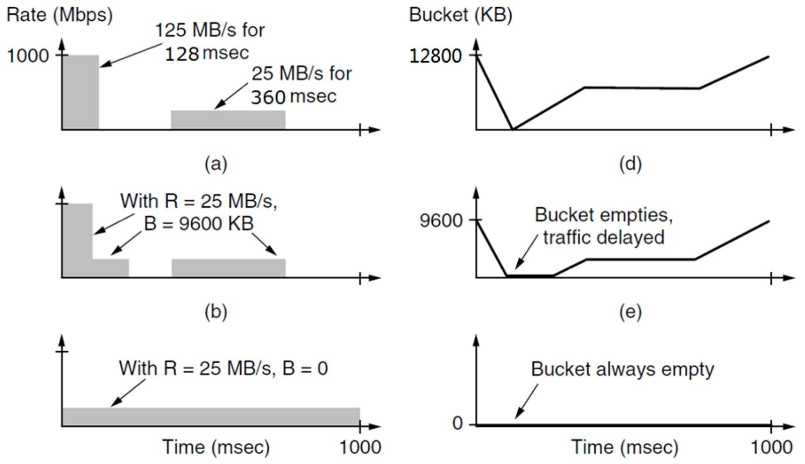 这组图表展示了流量整形中令牌桶算法相关概念 ，通过不同参数设置呈现流量速率和令牌桶状态随时间的变化：
左列速率（Rate）-时间（Time）图
- （a）图：展示突发流量情况。在开始的128毫秒内，流量速率达到125MB/s ；之后在360毫秒内，流量速率降为25MB/s 。体现流量的不均匀性，有明显突发阶段。
- （b）图：引入令牌桶参数 ，R（令牌生成速率）为25MB/s ，B（桶容量）为9600KB 。结合（a）图突发流量，表明在此参数下对流量的处理情况，可看出桶对突发流量的缓冲作用。
- （c）图：R仍为25MB/s ，但B = 0 ，即桶容量为0 。此时流量速率平稳保持在25MB/s ，没有突发情况，意味着没有桶对流量进行缓冲，流量被强制整形为恒定速率。
右列令牌桶（Bucket）容量 - 时间（Time）图
- （d）图：桶容量初始值较高（12800KB ），随着时间变化，桶容量先下降，然后保持一段时间不变，之后又上升 。说明桶在接收和处理流量过程中，容量有变化过程，存在流量填充和消耗阶段。
- （e）图：桶初始容量为9600KB ，在某时刻桶被清空（Bucket empties），之后流量产生延迟（traffic delayed） 。表示当桶容量不足以处理流量时，会出现桶空情况，后续流量需等待，产生延迟。
- （f）图：桶容量始终为0（Bucket always empty） ，说明在当前设置下，桶一直处于空的状态，没有流量能存入桶中，流量整形效果是流量无缓冲直接通过或被限制。
五、数据包调度¶
- 资源预留：为不同流量预留带宽、缓存空间、CPU 周期等资源。
- 调度算法：
- 先进先出（FIFO，FCFS）和尾丢弃（tail drop）：简单按顺序处理数据包，队列满时丢弃新到数据包。
- 随机早期检测（RED）算法：在队列满之前随机丢弃数据包，提前缓解拥塞。
- 公平排队（FQ）算法：公平分配带宽给不同流量。 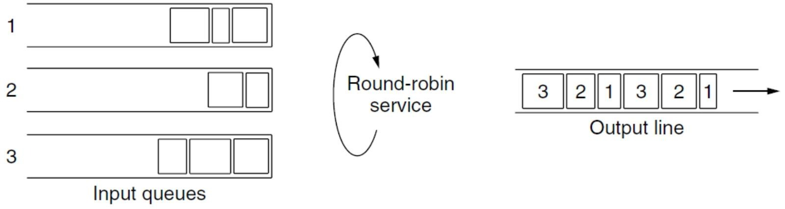
- 优先级排队（PQ）算法：根据数据包优先级进行排队处理。 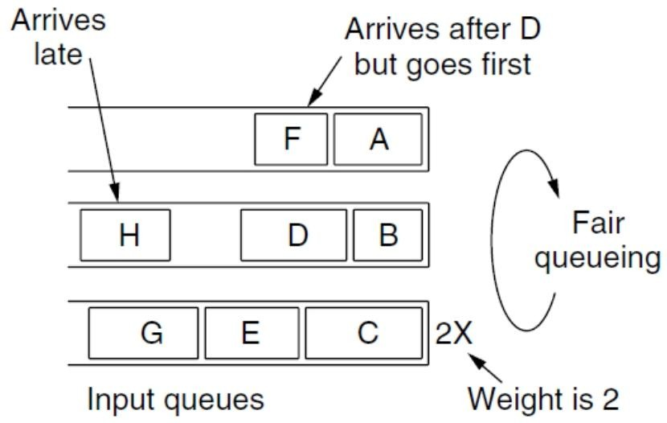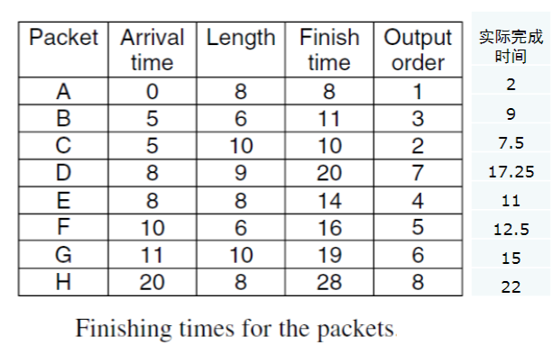
公式¶
公式含义¶
该公式为加权公平排队（WFQ）算法中计算数据包完成时间的核心公式，用于实现基于流量权重的带宽公平分配。
参数解释：
- \( F_{i} \)：第 \(i\) 个数据包的完成时间（处理完毕的时间点）。
- \( A_{i} \)：第 \(i\) 个数据包的到达时间（进入队列的时刻）。
- \( F_{i-1} \)：第 \(i-1\) 个数据包的完成时间（前一个数据包处理结束的时间）。
- \( L_{i} \)：第 \(i\) 个数据包的长度（单位：字节等，反映处理耗时）。
- \( W \)：对应流量的权重（权重越大，分配的带宽优先级越高）。
计算逻辑¶
- 确定起始时间：
取 \( A_{i} \)（当前数据包到达时间）和 \( F_{i-1} \)（前一个数据包完成时间）中的较大值，确保只有当数据包已到达且前序数据包处理完成后，才开始处理当前数据包。 - 计算处理耗时：
用数据包长度 \( L_{i} \) 除以流量权重 \( W \)，得到处理当前数据包的相对耗时（权重越大，单位长度的处理时间越短，体现带宽分配优势）。 - 得出完成时间：
起始时间 + 相对耗时 = 当前数据包的完成时间 \( F_{i} \)。
示例：
- 已知：\( F_{1}=5 \)（前包完成时间），\( A_{2}=4 \)（当前包到达时间），\( L_{2}=10 \)（包长度），\( W=2 \)（权重）。
- 计算：
- 起始时间：\( \max(4, 5) = 5 \)
- 相对耗时：\( 10 \div 2 = 5 \)
- 完成时间：\( F_{2} = 5 + 5 = 10 \)
- 结论：通过完成时间排序调度数据包，实现加权公平的带宽分配。
- 轮询公平排队及改进：
- 轮询公平排队问题：使用大数据包的主机比使用小数据包的主机获得更多带宽。
- 加权公平排队（WFQ）：考虑数据包到达时间（Ai）、完成时间（Fi）、长度（Li）和流量权重（W） ，实现更公平的带宽分配。
- 实现复杂度：N 个流量时，每个数据包处理复杂度为 O(logN) 。
- 赤字轮询（DRR）：是一种近似算法，每个数据包处理复杂度为 O(1) ，降低处理开销。
六、资源预留与准入控制¶
- 流量协商（Flow negotiation）：涉及多方参与，共同确定流量相关参数。
- 流量规格（Flow specification）：定义流量的具体要求和参数，文中未详述具体示例内容。
Internetworking¶
该节主要围绕网络互联展开，涵盖网络差异、连接方式、相关技术及问题处理等方面：
- 网络差异：不同网络在服务类型、地址格式、广播能力、包大小、顺序性、服务质量、可靠性、安全性、参数和计费方式等方面存在差异。
- 连接不同网络的方式
- 设备转换：构建能将不同网络数据包进行转换的设备。
- 增加间接层：在不同网络之上构建公共层，实现网络互联。
- 网络连接的具体技术
- 网桥与路由器：网桥依据MAC地址传输整个帧；路由器从帧中提取数据包，并根据第3层地址（IP地址）决定数据包的发送方向 。
- 隧道技术：源主机和目的主机在相同类型网络，但中间存在不同网络时使用。通过其他网络连接孤立主机或网络，形成覆盖网络，如虚拟专用网络（VPN）。
- MTU相关问题
- MTU的影响因素：最大传输单元（MTU）受硬件（如以太网帧大小）、操作系统（如缓冲区大小）、协议（如数据包长度字段的位数）、国际标准、减少错误重传以及避免数据包长时间占用信道等因素影响。
- 隧道技术对MTU的影响：网络安全头和隧道协议会增加包头，在硬件MTU不变的情况下，使使用隧道传输系统的MTU变小。
- 分片相关内容
- 分片类型
- 透明分片：出口网关需知晓是否收到所有分片，所有数据包必须从同一网关输出，存在重组和重新分片的开销。
- 非透明分片：仅在目的主机进行重组，对路由器要求较低，但会增加网络设备和目的主机的总开销，若分片丢失则整个数据包丢失，对主机负担较大。
- 分片编号：对分片进行编号，以便目的主机重组数据包。
- 避免分片的方法：现代互联网使用路径MTU发现机制，源端发送IP包时设置禁止分片位，路由器收到过大数据包时，向源端返回错误包，源端根据信息重新分片。TCP在建立连接时完成路径MTU协商。
- 分片类型
Network Layer in the Internet¶
该节主要介绍了互联网网络层的设计原则以及其基本概念，内容如下：
- 互联网网络层设计的十大原则（克拉克原则）
- 确保可行：在多个原型成功相互通信之前，不最终确定设计或标准，保证网络设计的可靠性和稳定性 。
- 保持简单（KISS原则）：如果一个功能不是绝对必要，就应省略，尤其是当通过组合其他功能能达到相同效果时，避免过度设计，降低系统复杂度 。
- 明确选择：当有多种方式做同一件事时，做出明确选择，避免方案混乱。
- 利用模块化：将网络层设计为多个模块，便于管理和维护，提高系统的可扩展性和灵活性。
- 预期异构性：互联网由多种不同的子网和设备组成，设计时要考虑到这种异构性，确保网络的兼容性。
- 避免静态选项和参数：对于像最大数据包大小这类不可避免的参数，最好由发送方和接收方协商确定，而非固定设置，以适应不同的网络环境。
- 追求良好设计而非完美：在设计过程中，不必追求绝对完美，找到一个能满足需求的良好设计即可，提高设计效率。
- 发送严格接收宽容：发送数据时严格遵守规则，确保数据的准确性和规范性；接收数据时要具有容错能力，能处理一些不规范的数据，增强网络的适应性。
- 考虑可扩展性：随着网络规模的不断扩大，设计应具备良好的可扩展性，以适应未来的发展。
- 兼顾性能和成本：在设计网络层时，要综合考虑网络性能和成本，在保证性能的前提下控制成本 。
- 互联网网络层的定义和任务：互联网是由多个相互连接的子网（自治系统）组成。互联网网络层的任务是提供一种尽力而为的方式，将数据报从源端传输到目的端，不保证数据传输的可靠性、顺序性等，但尽力完成数据的交付 。
The IP Version 4 Protocol¶
该节主要围绕IPv4协议展开，涵盖了IPv4报头字段、校验和算法以及部分IP选项的相关内容：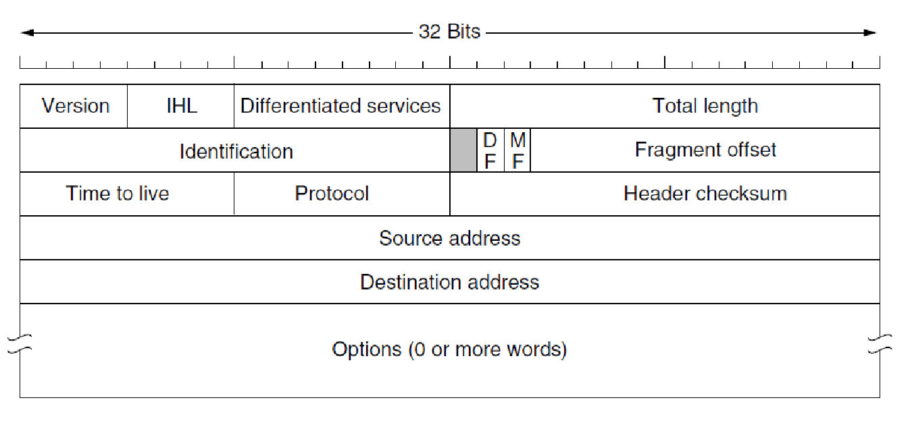
- IPv4报头字段
- 版本（Version，4位）：标识IP协议版本，对于IPv4，该字段值为4。
- 互联网报头长度（IHL，4位）：表示报头长度，以32位字为单位，取值范围5 - 15，对应实际长度20 - 60字节。
- 区分服务字段（Differentiated services field）：原称服务类型字段（TOS），最初包含3位优先级、4个标志（延迟、吞吐量、可靠性、成本）和1位保留位（必须为0） 。现在，前6位用于标记数据包的服务类别，后2位用于携带显式拥塞通知（ECN）信息。
- 总长度（Total Length，16位）：表示报头和数据的总字节数，最大值为65,535字节。
- 标识（Identification，16位）：目的主机用其判断新到达的分片属于哪个数据报，同一数据报的所有分片该值相同。
- DF（Don't Fragment，1位）：指示路由器不要对数据报进行分片。最初用于支持无法重组分片的主机，现在用于路径MTU发现过程。
- MF（More Fragments，1位）：用于判断当前分片后是否还有更多分片。
- 片偏移（Fragment offset，13位）：以8字节为单位，指示当前分片在数据报中的位置，范围是0 - 8191。
- TTL（Time to live，8位）：限制数据包的生存时间，单位为秒，每经过一跳减1，为0时数据包被丢弃，并向源主机发送警告包。
- 协议字段（Protocol field，8位）：指定将数据包交付给哪个传输层协议，如1表示ICMP，6表示TCP，17表示UDP等。
- 头部校验和（Header checksum，16位）：仅用于校验报头，每经过一跳都需重新计算。
- 源地址和目的地址（Source & Destination address，32 + 32位）：分别标识数据包的发送方和接收方的IP地址。
- 校验和算法：采用16位整数算数加法，将进位累加，保证在不同CPU（大头、小头）上计算结果相同，相比CRC，该算法更适用于IPv4报头校验。
- 部分IP选项
- 安全选项（Security option）：用于指定数据报的保密级别。
- 严格源路由选项（Strict source routing option）：给出从源到目的完整的IP地址序列，数据包必须严格按照该序列传输。
- 松散源路由选项（Loose source routing option）：要求数据包按指定的路由器列表传输，顺序固定，但允许在途中经过其他路由器。
- 记录路由选项（Record route option）：使沿途路由器将其IP地址附加到选项字段。
- 时间戳选项（Timestamp option）：类似记录路由选项，但路由器除记录IP地址外，还记录32位时间戳。
IP Addresses¶
该节主要围绕IP地址展开，涵盖了地址分类、特殊地址、前缀、子网、无类别域间路由（CIDR）、地址分配、路由聚合以及路由表等内容，具体如下：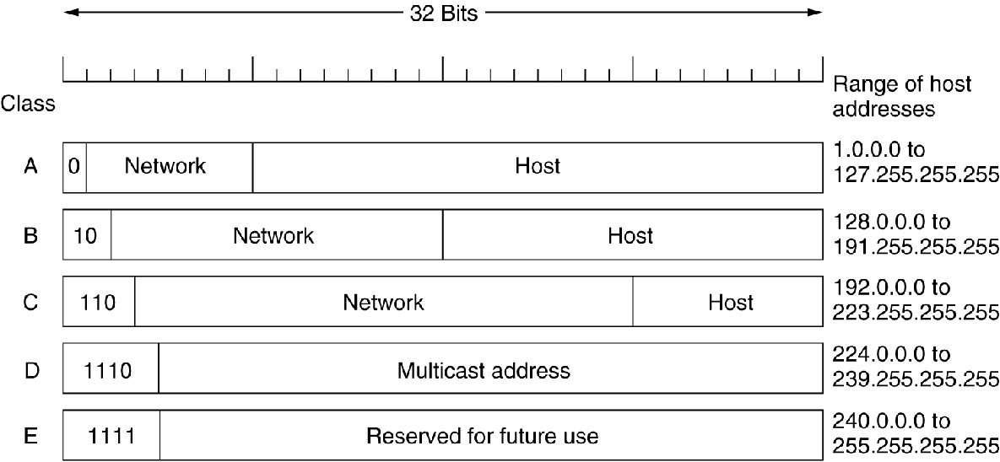
- IP地址分类：IP地址分为A、B、C、D四类，由互联网名称与数字地址分配机构（ICANN）负责分配。A类地址以0开头，B类以10开头，C类以110开头，D类以1110开头，分别用于不同规模的网络和特殊用途（如多播）。
- 特殊IP地址：包括本地网络广播地址（路由器不会转发到其他网络）和远程网络广播地址（路由器根据目的网络号，通过路由表转发） 。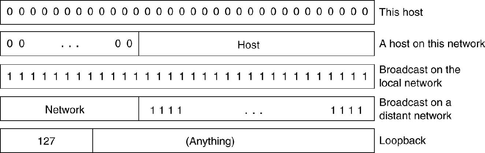
- 前缀和子网
- 前缀：IP地址是层次化的，由可变长度的网络部分和主机部分组成。网络部分对于同一网络中的所有主机相同，网络对应着连续的IP地址空间块。通过前缀表示法（如128.208.0.0/24）和子网掩码（如255.255.255.0）来划分网络和主机部分，路由器根据地址的网络部分进行数据包转发。
- 子网：子网划分在网络内部进行，外部不可见，有助于提高IP地址的使用效率和网络管理的灵活性。
- 无类别域间路由（CIDR）：通过路由聚合，将多个小的前缀合并为一个大的前缀，以减少路由表的大小。如将多个不同的IP地址范围合并成一个更大的地址块进行路由，从而简化路由表。
- IP地址分配与聚合：不同机构或区域被分配特定的IP地址范围，这些地址范围可进一步聚合，以优化路由。如剑桥大学、爱丁堡大学等分别被分配特定的地址范围，这些范围可根据需求进行聚合管理。
- 最长匹配前缀路由与路由表
- 最长匹配前缀路由：当路由表中有多个条目与目的地址匹配时，选择子网掩码最长的条目，即最精确匹配的条目来确定数据包的转发路径。
- 路由表：是一个包含（IP地址、子网掩码、输出线路、下一跳）的数组。查找路由表时，将目的地址与子网掩码进行掩码运算后，与表中的条目进行比较寻找匹配项。为提高地址匹配速度，设计了复杂算法，商业路由器使用定制的VLSI芯片（TCAM）来实现这些算法。
NAT¶
一、核心概念与特点¶
- 定义：NAT 是一种将私有网络 IP 地址转换为公有 IP 地址的技术，用于实现私有网络与公共互联网的通信。
- 透明性：对主机和路由器完全透明，主机无需修改配置即可通过 NAT 设备访问公网。
二、私有网络地址范围¶
- 三段保留地址（重点）：
- 10.0.0.0/8：范围为 10.0.0.0 ~ 10.255.255.255，支持约 1600 万主机。
- 172.16.0.0/12：范围为 172.16.0.0 ~ 172.31.255.255，支持约 100 万主机。
- 192.168.0.0/16：范围为 192.168.0.0 ~ 192.168.255.255，支持约 6.5 万主机。
三、动态 NAT 表项机制¶
- 工作流程（重点）：
- 出站（Outgoing）：
- 私有 IP（如 10.0.0.1:3723）访问公网时，NAT 设备将其转换为公有 IP 和端口（如 123.116.156.133:33120），并重新计算 IP 和 TCP 校验和。
- 入站（Incoming）：
- 公网响应数据包通过公有 IP 和端口（如 123.116.156.133:33120）到达 NAT 设备，设备根据表项反向映射回私有 IP（如 10.0.0.1:3723）。
- 表项管理：
- 表项在连接建立时动态创建，连接关闭或长时间未使用后自动删除。
- 共存性问题：
- 问题1：不同私有主机（如 10.0.0.1 和 10.0.0.2）访问不同公网目标（如 18.7.22.83:80 和 19.7.34.90:80）时，可共享同一公有 IP 的不同端口（如 33120），表项可共存。
- 问题2：同一私有主机访问同一公网目标的不同端口（如 18.7.22.83:80 和 18.7.22.83:8080），或不同主机访问同一公网目标的不同端口，均可通过端口区分表项，实现共存。
四、静态 NAT 表项机制¶
- 用途：固定映射私有 IP 与公有 IP（如 Web 服务器），允许公网主动访问私有网络设备。
- 示例：
- 静态映射 10.0.0.7:8080 到公有 IP 123.116.156.133:80，公网客户端可通过 123.116.156.133:80 访问私有服务器。
五、NAT 的局限性（重点）¶
- 违反 IP 设计原则：破坏“IP 地址唯一标识主机”的特性，导致公网无法主动发起连接。
- 连接依赖性：NAT 设备重启会中断 TCP/UDP 连接（因表项丢失）。
- 端到端通信限制：内网设备无法被公网直接访问，需依赖端口映射。
- 协议兼容性问题：
- 不支持非 TCP/UDP 协议（如 ICMP），除非 NAT 专门适配。
- 部分应用（如 FTP）在数据报文中携带 IP 地址，NAT 无法修改报文内容，导致地址不匹配。
六、总结¶
NAT 通过私有地址与公有地址的转换，解决了 IPv4 地址短缺问题，但其透明性和端口复用机制依赖动态表项管理，同时引入了端到端通信限制和协议兼容性挑战。静态 NAT 可支持公网主动访问，动态 NAT 则适用于多数客户端主动发起的场景。
IPv6¶
IPv6概述¶
IPv6是互联网协议的下一代版本，旨在解决IPv4面临的地址空间不足、路由效率低等核心问题，其设计目标和技术特性如下：
一、IPv6主要目标¶
- 扩大地址空间
- 采用128位地址，地址总数达 \(3 \times 10^{38}\) 个，人均可分配约 \(4 \times 10^{18}\) 个地址，彻底解决IPv4地址枯竭问题。
- 优化路由效率
- 通过分层地址结构（如顶级聚合标识符TLA、下一级聚合标识符NLA）减少路由表条目，提升路由器转发速度。
- 简化协议处理
- 固定报头长度（40字节），移除冗余字段（如IPv4的IHL字段），路由器处理效率显著提高。
- 增强安全性与服务质量
- 内置安全扩展头（如认证头AH、加密安全载荷ESP），支持IPsec加密；通过流标签（Flow Label）区分不同服务类型（如实时数据），保障QoS。
- 支持网络演进与兼容性
- 设计兼容IPv4（如隧道技术），允许新旧协议长期共存；支持主机漫游时保持地址不变，适应移动网络需求。
二、IPv6报头结构¶
1. 主报头（固定40字节） 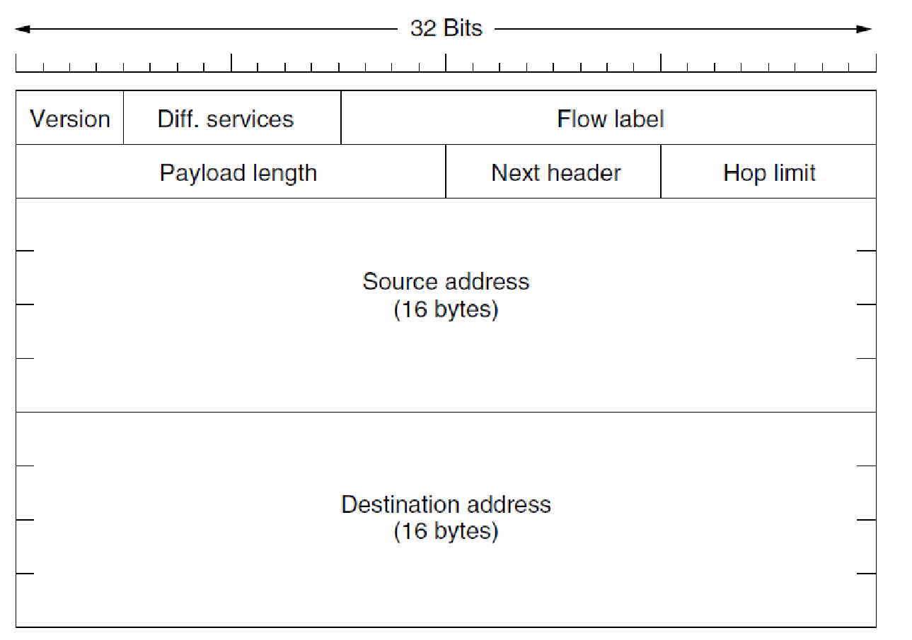¶
| 字段 | 描述 |
|---|---|
| 版本 | 固定值6，标识IPv6协议。 |
| 流量类别 | 替代IPv4的服务类型字段，用于区分数据包优先级和QoS需求。 |
| 流标签 | 唯一标识一个数据流（由源地址、目的地址和流编号组成），便于路由器快速处理同属一流的数据包。 |
| 有效载荷长度 | 表示报头后数据长度（含扩展头），最大65535字节。 |
| 下一个报头 | 标识后续扩展头类型（如 fragmentation、认证头）或上层协议（如TCP/UDP）。 |
| 跳数限制 | 替代IPv4的TTL字段，每经一个路由器减1，防止数据包无限循环。 |
| 源地址/目的地址 | 各128位，支持全球唯一编址和本地链路地址。 |
2. 关键改进¶
- 移除冗余字段：删除IPv4的校验和字段（由传输层承担错误校验）、分片字段（通过路径MTU发现机制动态适配链路MTU）。
- 扩展头机制：将可选功能（如分片、安全）剥离为主报头后的独立扩展头，提升协议灵活性（例如，仅需分片时才添加fragmentation扩展头）。
三、地址表示与分配¶
1. 地址表示法¶
- 标准格式：8组4位十六进制数，用冒号分隔（如
2001:0db8:85a3:0000:0000:8a2e:0370:7334）。 - 优化规则：
- 前导零省略：每组前导零可省略（如
2001:0db8:85a3::8a2e:0370:7334）。 - 连续零压缩：连续多组零可用双冒号
::表示（每组仅用一次，如::1表示本地回环地址）。 - IPv4兼容格式：后缀接入IPv4地址（如
::192.168.1.1）。
2. 地址分配结构  ¶
¶
- 层次化编址：
- 格式前缀（FP，3位）：标识地址类型（如单播、多播）。
- 顶级聚合标识符（TLA，13位）：分配给ISP，用于全球路由聚合。
- 下一级聚合标识符（NLA，24位）：由ISP分配给企业或机构。
- 站点级聚合标识符（SLA，16位）：企业内部子网划分。
- 接口标识符（64位）：基于MAC地址生成，确保主机在子网内唯一。
示例：2001:0db8:abcd:ef00::/64 中，前64位为网络前缀，后64位为接口标识符。
四、核心优势总结¶
| 特性 | 对比IPv4的改进 |
|---|---|
| 地址空间 | 128位（IPv4为32位），支持物联网等海量设备接入。 |
| 路由效率 | 分层编址减少路由表条目，最长前缀匹配提升转发速度。 |
| 协议处理 | 固定报头+扩展头设计，路由器处理延迟降低50%以上。 |
| 安全性 | 内置IPsec，默认加密传输，避免数据篡改与窃听。 |
| 移动性 | 支持无状态地址自动配置，主机移动时无需修改地址。 |
总结：IPv6通过地址扩容、协议简化、安全增强和路由优化，为未来互联网（如5G、物联网）提供了可扩展的底层架构，是解决当前网络局限性的核心技术升级。
Internet Control Protocols¶
一、协议定位与封装¶
- 定义：ICMP 是网络层协议，用于在 IP 主机、路由器之间传递控制消息（如网络通断、拥塞、路由错误等）。
- 封装方式：ICMP 报文封装在 IP 数据报中，作为 IP 层的数据部分，IP 报头的协议字段值为 1。
二、ICMP 报文分类与功能¶
ICMP 报文分为 差错报告报文 和 询问报文 两类，加粗部分为重点功能：
1. 差错报告报文¶
- 目的不可达（Destination Unreachable）：
- 场景：路由器无法找到目标地址（如网络不可达、主机不可达），或因 DF 位（禁止分片） 导致无法转发（如 MTU 不足）。
- 作用：通知源主机传输失败及原因。
- 超时（Time Exceeded）：
- 场景：IP 数据报的 TTL（生存时间）字段递减为 0，被路由器丢弃。
- 作用：报告分组生命周期结束，常用于
traceroute路径追踪。 - 源抑制（Source Quench）：
- 场景：路由器或主机因拥塞丢弃分组，向源主机发送 抑制包（Choke Packet）。
- 作用：要求源主机降低发送速率（已逐渐被 ECN 替代）。
- 重定向（Redirect）：
- 场景：路由器发现更佳路由（如更优下一跳），向源主机发送重定向消息。
- 作用：优化路由路径，通知主机更新路由表。
2. 询问报文¶
- 回显请求与应答（ECHO & ECHO REPLY）：
- 用途：测试主机间连通性（如
ping命令）。 - 时间戳请求与应答（Timestamp Request & Reply）：
- 用途：测量往返时间（RTT），用于网络性能分析。
- 路由器通告与请求（Router Advertisement & Solicitation）：
- 用途：主机主动发现附近路由器（如无状态地址自动配置）。
三、ICMP 报文格式 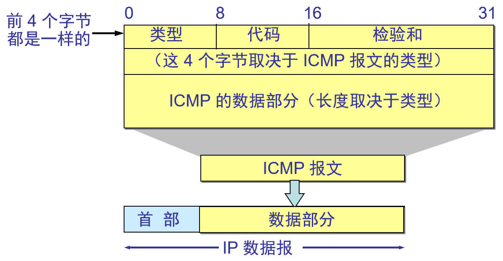¶
- 统一首部（前4字节）：
- 类型（Type）：标识报文类型（如 3=目的不可达，8=回显请求）。
- 代码（Code）：细化类型中的具体原因（如类型3的代码1=网络不可达，代码2=主机不可达）。
- 校验和（Checksum）：校验报文完整性。
- 数据部分：
- 差错报告报文：包含原 IP 数据报的 前8字节首部（用于定位出错分组）及部分数据。
- 询问报文：内容随具体功能（如时间戳、回显数据）而定。
四、典型应用场景¶
- 路径追踪（traceroute）：
- 原理：发送 TTL 递增的 UDP 数据报，途经路由器因 TTL=0 回送 超时（类型11） 报文，最终目标主机回送 端口不可达（类型3代码3） 报文，从而获取完整路径。
- 示例：
tracert命令输出各跳路由器的 IP 地址和延迟（如上图 Windows 示例）。 - MTU 探测（路径 MTU 发现）：
- 原理：源主机发送 DF=1（禁止分片） 的大分组，路由器因 MTU 不足回送 目的不可达（类型3代码4） 报文，携带建议的 MTU 值，源主机据此调整分组大小。
- 网络诊断：
- 目的不可达：排查主机或网络是否可达（如服务器未启动）。
- 重定向：优化本地路由（如主机通过 DHCP 获取默认网关后，路由器发送重定向告知更优路径）。
五、总结¶
ICMP 是 IP 协议的重要补充，通过标准化的控制消息实现网络状态反馈与故障诊断。重点功能包括差错报告（如目的不可达、超时）和询问（如 ping），其报文格式简洁且功能明确，广泛应用于网络调试与性能优化。
ARP,DHCP¶
一、ARP（地址解析协议）¶
核心功能：将IP地址动态映射为数据链路层地址（如以太网MAC地址），实现网络层与链路层的地址转换。
1. 工作原理¶
- 动态解析流程（重点）：
- 广播请求：主机A需发送数据给IP为192.31.65.5的主机B时，先广播ARP请求报文，内容为“我是192.31.65.16（MAC：00-00-C0-15-AD-18），寻找192.31.65.5的MAC地址”。
- 单播响应：主机B接收到广播后，单播回复ARP响应报文，内容为“我是192.31.65.5，MAC地址为00-06-2B-00-EE-0A”。
-
缓存更新：主机A与B均将对方的IP-MAC映射存入ARP缓存，默认超时时间为几分钟（避免长期占用资源）。
-
静态解析：通过系统配置文件手动绑定IP与MAC地址（如
arp -s命令），适用于需要固定映射的场景（如服务器）。
2. 优化机制¶
- ARP缓存：
- 减少重复解析开销，提高转发效率。
- 超时机制确保缓存条目失效后重新动态获取（应对主机移动或MAC变更）。
- 免费ARP（Gratuitous ARP）：
- 主机启动时主动广播自身IP-MAC映射（如“寻找自己的IP地址”），强制更新局域网内其他主机的ARP缓存。
- 作用：检测IP地址冲突（若收到响应，说明存在重复IP）。
- 代理ARP：
- 路由器代表目标主机响应ARP请求（如主机A与主机B跨网段时，路由器回复自身MAC地址，充当中间转发角色），隐藏子网细节。
3. 与路由表的关联¶
- 直接交付与间接交付（重点）：
- 直接交付：目标IP与源IP在同一子网（如Host1访问192.32.65.0/24内主机），通过ARP获取目标MAC，直接发送数据帧。
- 间接交付：目标IP与源IP不在同一子网（如Host1访问192.32.63.0/24内主机），需通过默认网关（如192.32.65.1）转发，此时ARP用于获取网关的MAC地址。
- 路由表项要求：
- 路由表中“下一跳（NextHop）”若为具体IP地址（非
direct），该IP必须属于出接口所在子网（如Host4的192.32.63.1属于192.32.63.0/24），确保可通过ARP直接解析其MAC。
二、DHCP（动态主机配置协议）¶
核心功能：自动为客户端分配IP地址及网络配置参数，替代传统手动配置（如RARP、BOOTP）。
1. 工作流程（四次握手）¶
| 步骤 | 报文类型 | 源地址 | 目的地址 | 内容与作用 |
|---|---|---|---|---|
| 1 | DHCPDISCOVER | 0.0.0.0 | 255.255.255.255 | 客户端广播请求配置，包含MAC地址与事务ID（如654）。 |
| 2 | DHCPOFFER | DHCP服务器IP | 255.255.255.255 | 服务器响应，提供可用IP（如223.1.2.4）、租期（3600秒）及配置参数。 |
| 3 | DHCPREQUEST | 0.0.0.0 | 255.255.255.255 | 客户端确认接受配置，广播请求以通知其他服务器。 |
| 4 | DHCPACK | DHCP服务器IP | 客户端IP | 服务器确认配置生效，客户端正式获取IP地址及参数。 |
2. 关键特性¶
- 配置参数：
- 必选：IP地址、子网掩码、默认网关、DNS服务器地址。
- 可选：文件服务器地址、域名等。
- 地址租期：
- 客户端需在租期到期前（默认50%时）发送DHCPREQUEST续租，若未收到ACK则重新申请地址。
- 租期耗尽后，地址被服务器回收，确保资源重用。
- 中继代理（Relay Agent）：
- 跨网段场景中，中继代理转发DHCP广播请求至其他子网的DHCP服务器（如路由器充当代理），解决广播无法跨网段的问题。
3. 与ARP的协同¶
- DHCPDISCOVER/REQUEST报文通过广播发送，需依赖ARP解析本地网关的MAC地址（若配置网关）。
- 客户端获取IP后，通过ARP动态解析同一子网内目标主机的MAC地址，实现数据链路层通信。
三、总结¶
- ARP 是网络层与链路层的桥梁，通过动态解析IP-MAC地址实现数据帧的正确转发，优化机制（如缓存、免费ARP）提升效率与可靠性。
- DHCP 通过自动化配置流程减少人工管理成本，四次握手机制确保配置可靠分发，中继代理扩展了跨网段应用场景。
- 重点关联：两者共同支撑IP网络的连通性——DHCP分配IP，ARP实现IP到MAC的映射，缺一不可。
OSPF (Open Shortest Path First)¶
一、协议定位与分类¶
- 所属类别：内部网关协议（IGP），用于自治系统（AS）内部的路由计算，与RIP、EIGRP、IS-IS等同属IGP体系。
- 功能对比：外部网关协议（EGP）如BGP-4用于AS之间的路由交互，而OSPF专注于AS内部的高效路由。
二、核心设计要求¶
- 开放性：基于RFC 2328标准，公开透明，支持多厂商设备互联。
- 动态适应性：自动快速响应拓扑变化，通过链路状态更新（LSU）实时调整路由。
- 多度量支持：可基于带宽、延迟、负载等多种距离度量计算路径（区别于RIP仅用跳数）。
- 分层架构：支持区域划分（Area），降低路由计算复杂度（重点）。
- 负载均衡：支持等价多路径（ECMP），流量分摊到多条链路上。
- 安全性：提供认证机制（如明文、MD5），确保路由更新的合法性。
三、区域（Area）划分机制¶
- 定义：将一个AS划分为多个逻辑区域（Area），每个区域内的路由器维护相同的链路状态数据库（LSDB），独立运行最短路径算法（SPF）。
- 主干区域（Backbone Area）：
- 唯一标识：Area 0（或Area 0.0.0.0），所有其他区域必须连接到主干区域。
- 作用：负责区域间路由信息的中转与汇总。
- 区域边界：
- 区域内路由器仅需了解本区域拓扑，区域间仅传递路由汇总信息（非详细链路状态），大幅减少路由表规模。
- 跨区域路由器：
- 连接两个或多个区域的路由器（如Area Border Router，ABR）需维护多个区域的LSDB，并分别运行SPF算法。
四、路由器类型与功能¶
| 路由器类型 | 定义与功能 |
|---|---|
| 内部路由器（Internal Router） | 所有接口均属于同一区域，仅维护本区域LSDB，计算本区域内路由。 |
| 区域边界路由器（ABR） | 连接主干区域与其他区域，汇总本区域路由信息并注入主干区域（或反向）。 |
| 自治系统边界路由器（ASBR） | 引入外部路由（如BGP路由）到OSPF域内，外部路由通过ASBR注入并标记为“可达”。 |
五、关键优势与应用场景¶
- 优势：
- 快速收敛：通过洪泛机制同步LSDB，拓扑变化时秒级更新路由（优于RIP的30秒周期）。
- 层次化设计：区域划分降低路由计算复杂度，支持大规模网络（如数千路由器）。
- 无环路保证：基于Dijkstra算法生成最短路径树，从数学上避免路由环路。
- 典型应用：
- 企业园区网、运营商骨干网等需要高可靠性和可扩展性的场景。
- 与BGP结合，实现AS内部与外部路由的协同（如ASBR注入BGP路由）。
六、总结¶
OSPF是IGP中基于链路状态算法的典型协议，通过区域划分、动态拓扑感知、多度量支持等特性，解决了传统距离矢量协议（如RIP）的收敛慢、路由表臃肿等问题。其核心设计思想是“分而治之”，通过分层架构提升网络可管理性，适用于中大型IP网络的路由规划。重点需关注区域划分规则、路由器角色及SPF算法的应用。
BGP (Border Gateway Protocol)¶
一、BGP目标¶
- 与内部网关协议（IGP）对比：IGP 主要任务是尽可能高效地将数据包从源移动到目的地，着重发现和计算路由；而 BGP 作为外部网关协议（EGP），侧重于控制路由的传播并选择最佳路由。
- 路由策略：典型的路由策略涉及政治、安全或经济等方面的考量。这些策略通常需手动配置到每个 BGP 路由器中（或通过某种脚本引入），并非协议本身的组成部分。从 BGP 路由器角度看，网络世界由自治系统（ASes）以及连接它们的线路构成，其中包括末梢网络、多连接网络和中转网络 。
二、BGP 路由器选路方式¶
- 自主选路：每个 BGP 路由器从已知的可能路径中自主选择自己认为的最佳路由。在一个自治系统的不同位置的 BGP 路由器，可能会为到达同一目的地选择不同的 AS 路径。
- 选路策略：包括检测和打破路由环路；优先选择通过对等网络的路由，而非通过中转提供商的路由 ；较短的 AS 路径更优；还存在其他策略等。